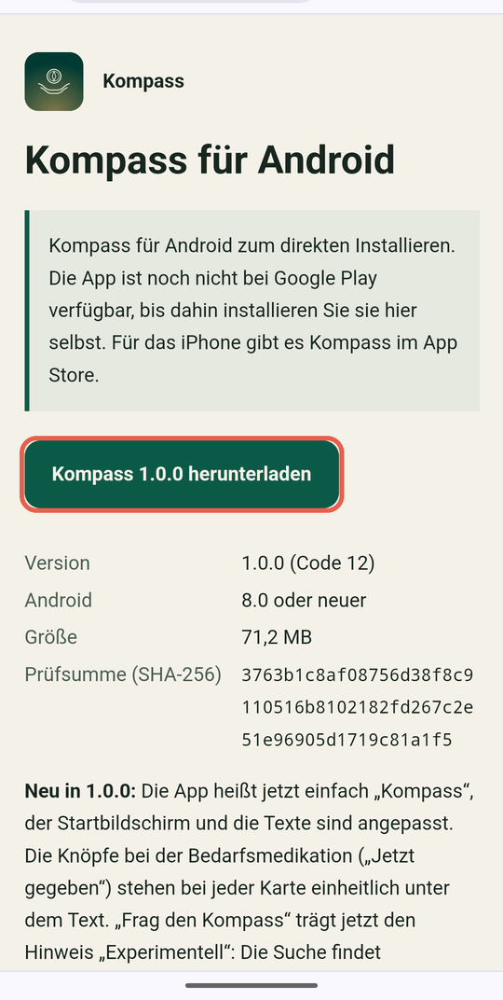
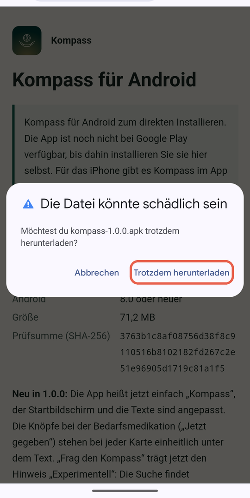
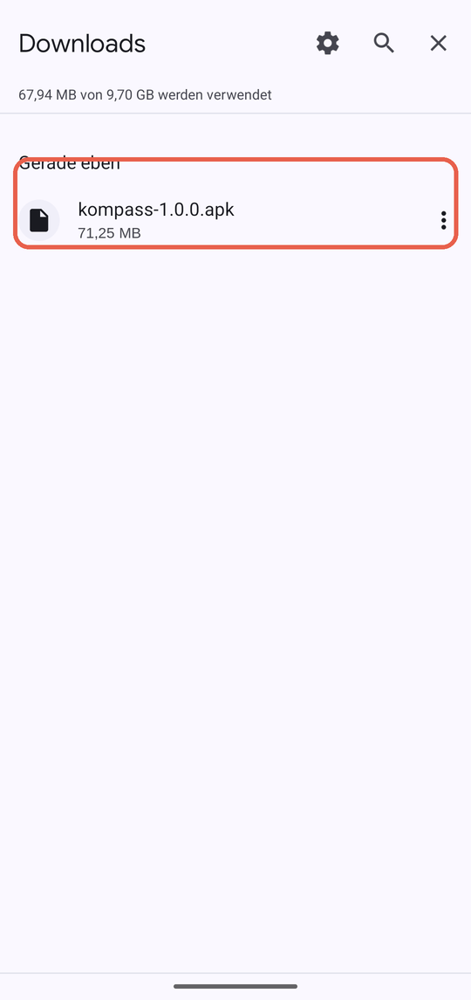
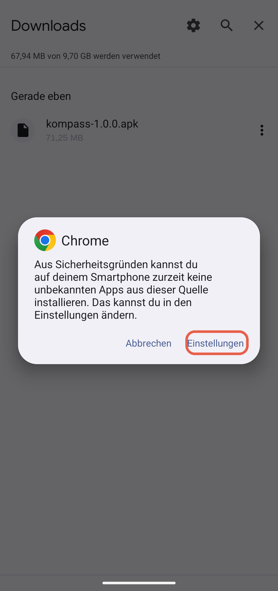
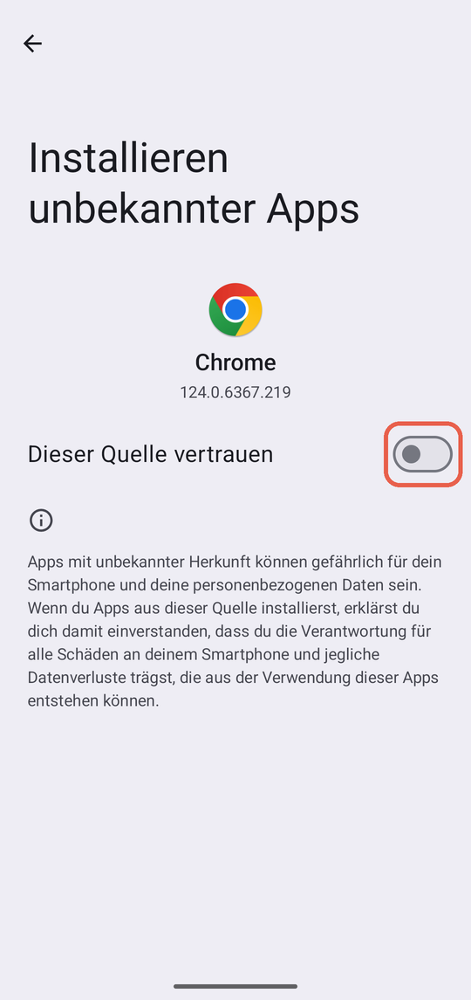
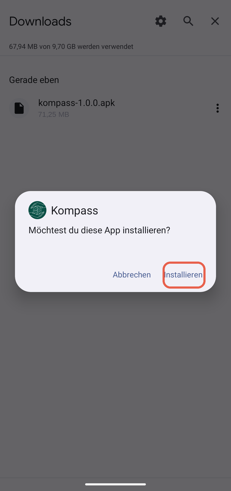
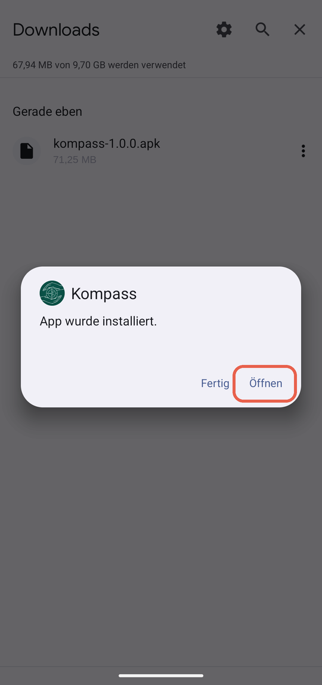
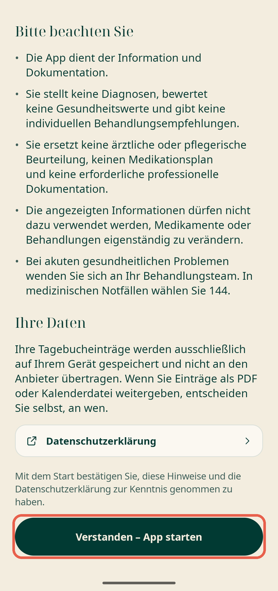
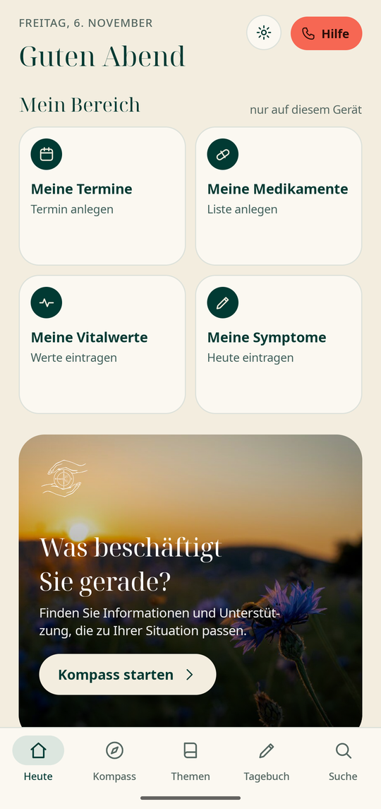

Kompass auf Android installieren
Kompass ist noch nicht bei Google Play. Sie laden die App einmal selbst herunter und installieren sie. Es dauert etwa fünf Minuten. Die Bilder zeigen ein Pixel-Handy; bei Samsung, Xiaomi und anderen Herstellern sehen die Fenster leicht anders aus, die Wörter sind aber meist gleich oder ähnlich.
Laden Sie die App nur von nbsystems.dev/kompass/android/ herunter. Dort steht auch die Prüfsumme der Datei.
Schritt 1
Seite öffnen und herunterladen
Öffnen Sie die Seite „Kompass für Android“ auf Ihrem Android-Handy. Tippen Sie auf den grünen Knopf Kompass 1.0.2 herunterladen (auf den Bildern steht noch eine ältere Nummer).

Schritt 2
Warnung des Browsers bestätigen
Der Browser warnt: „Die Datei könnte schädlich sein“. Das erscheint bei jeder App, die nicht aus dem Play Store kommt. Tippen Sie auf Trotzdem herunterladen.

Schritt 3
Die heruntergeladene Datei öffnen
Öffnen Sie die Liste Ihrer Downloads (im Browser unter „Downloads“, oder in der App „Dateien“). Tippen Sie auf kompass-1.0.2.apk.

Schritt 4
Einmalig: Installation erlauben
Beim ersten Mal sagt Android, dass der Browser keine Apps installieren darf. Tippen Sie auf Einstellungen.

Schritt 5
Schalter einschalten
Schalten Sie Dieser Quelle vertrauen ein (der Schalter wird farbig). Gehen Sie dann mit dem Pfeil oben links oder der Zurück-Taste zurück und tippen Sie in der Liste noch einmal auf die Datei.

Schritt 6
Installieren
Android fragt: „Möchtest du diese App installieren?“ Tippen Sie auf Installieren. Warnt Google Play Protect vor einer unbekannten App, tippen Sie auf Details und dann auf Trotzdem installieren. Die App kommt von der Seite nbsystems.dev und ist noch nicht im Play Store.

Schritt 7
Öffnen
Wenn „App wurde installiert“ erscheint, tippen Sie auf Öffnen.

Schritt 8
Hinweis lesen und starten
Beim ersten Start erscheint ein Hinweis zur App. Lesen Sie ihn und tippen Sie unten auf Verstanden – App starten.

Schritt 9
Fertig
Kompass ist installiert. Alle Einträge bleiben auf Ihrem Handy. Beim ersten Erinnerungswunsch fragt Android nach Benachrichtigungen; erlauben Sie diese, wenn Sie Erinnerungen nutzen möchten.

Gut zu wissen
- Update: Neue Versionen laden Sie auf derselben Seite herunter und installieren sie einfach über die alte. Ihre Einträge bleiben erhalten.
- Deinstallieren löscht alle Einträge. Alles liegt nur auf Ihrem Handy.
- Hilfe: Schreiben Sie an support@nbsystems.dev mit Handy-Modell und Android-Version, bitte ohne persönliche Gesundheitsdaten.
- Kompass ersetzt keine ärztliche Beratung. Im Notfall wählen Sie 144 oder 112.